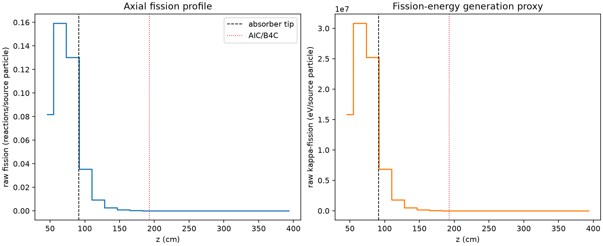
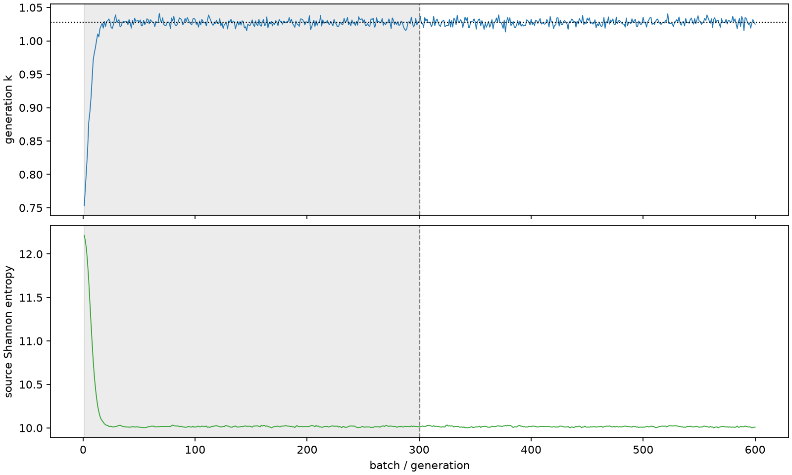

| field | value |
|---|---|
| experiment | V2-STAGE_32_OGRENCI_02-0004 |
| k | 1.0277361628341084 |
| MC standard error | 0.00020133890361466133 |
| seconds | 1155.7987050070005 |
| acceptance | not_assessed |
| convergence | review_required |
Completed is output integrity only; physical and statistical review required. Zero tallies do not prove zero production or zero uncertainty.
| diagnostic | value |
|---|---|
| geometric fuel voxels | 5280 |
| zero fission tally voxels | 1914 |
| low signal fuel voxels | 3043 |
| low signal fission share | 0.00010068469064691386 |
| low signal kappa share | 0.00010072892628484802 |
| important fission share | 0.950191185870488 |
| previous filter included | 2237 |
| duration estimate s | 1562.5173488400023 |
| actual minus estimate s | -406.7186438330018 |
| fission relative MC error | statistics |
|---|---|
| all_geometric_fuel | {"voxels": 5280, "positive_mean_voxels": 3366, "zero_mean_voxels": 1914, "undefined_relative_error_voxels": 1914, "median": 0.054841005798842046, "p95": 1.0, "maximum": 1.0000000000000002} |
| low_signal | {"voxels": 3043, "positive_mean_voxels": 1129, "zero_mean_voxels": 1914, "undefined_relative_error_voxels": 1914, "median": 0.5937127492939397, "p95": 1.0, "maximum": 1.0000000000000002} |
| important_95pct | {"voxels": 986, "positive_mean_voxels": 986, "zero_mean_voxels": 0, "undefined_relative_error_voxels": 0, "median": 0.00462733611902735, "p95": 0.008253324664676829, "maximum": 0.008945425472743277} |
| outside_previous_filter | {"voxels": 3043, "positive_mean_voxels": 1129, "zero_mean_voxels": 1914, "undefined_relative_error_voxels": 1914, "median": 0.5937127492939397, "p95": 1.0, "maximum": 1.0000000000000002} |
| kappa_fission relative MC error | statistics |
|---|---|
| all_geometric_fuel | {"voxels": 5280, "positive_mean_voxels": 3366, "zero_mean_voxels": 1914, "undefined_relative_error_voxels": 1914, "median": 0.054763572138765024, "p95": 1.0, "maximum": 1.0000000000000002} |
| low_signal | {"voxels": 3043, "positive_mean_voxels": 1129, "zero_mean_voxels": 1914, "undefined_relative_error_voxels": 1914, "median": 0.5931327752819273, "p95": 1.0, "maximum": 1.0000000000000002} |
| important_95pct | {"voxels": 986, "positive_mean_voxels": 986, "zero_mean_voxels": 0, "undefined_relative_error_voxels": 0, "median": 0.004621497910104647, "p95": 0.008239905037160194, "maximum": 0.008931740918414269} |
| outside_previous_filter | {"voxels": 3043, "positive_mean_voxels": 1129, "zero_mean_voxels": 1914, "undefined_relative_error_voxels": 1914, "median": 0.5931327752819273, "p95": 1.0, "maximum": 1.0000000000000002} |
| axial bin | fission share | kappa-fission share |
|---|---|---|
| 1 | 0.19516733359331395 | 0.195166751724547 |
| 2 | 0.3795517674607296 | 0.3795302025761591 |
| 3 | 0.31061346579760946 | 0.31059939612495713 |
| 4 | 0.08413900894545444 | 0.08416428350298778 |
| 5 | 0.022138170600579942 | 0.022145974286134282 |
| 6 | 0.006084767108752398 | 0.006087017258530124 |
| 7 | 0.001679701050582854 | 0.0016803448535349268 |
| 8 | 0.0004665856343863019 | 0.0004667580964206091 |
| 9 | 0.0001195746946651781 | 0.00011962718883413691 |
| 10 | 2.8634489073100216e-05 | 2.864952043351109e-05 |
| 11 | 7.950938105154312e-06 | 7.955963156227609e-06 |
| 12 | 2.0850547668579764e-06 | 2.0846329349857534e-06 |
| 13 | 6.909204499585577e-07 | 6.907506795176449e-07 |
| 14 | 2.637115307661529e-07 | 2.6352069062766034e-07 |
| 15 | 0.0 | 0.0 |
| 16 | 0.0 | 0.0 |
| 17 | 0.0 | 0.0 |
| 18 | 0.0 | 0.0 |
| 19 | 0.0 | 0.0 |
| 20 | 0.0 | 0.0 |
Histories include the inactive-to-active transition at batch 300. kappa-fission approximates fission energy production, not total heat deposition.

